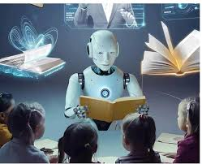

| Tecnologia Hoy | |
| Dispositivos Electronicos Internet y redes Inteligencia artificial Seguridad digital | |
| La tecnología forma parte de nuestra vida diaria y evoluciona constantemente. Desde los dispositivos que usamos hasta los avances científicos, la innovación tecnológica cambia la forma en que nos comunicamos, trabajamos y aprendemos. En esta página exploramos algunos de los temas más importantes de la actualidad tecnológica. | |
Innovaciones recientesLa tecnología avanza rápidamente y cada año surgen nuevas innovaciones que transforman la manera en que vivimos, estudiamos y nos comunicamos. Estas innovaciones buscan hacer la vida más fácil, eficiente y conectada.Actualmente, destacan avances como la inteligencia artificial, que permite a las máquinas aprender y tomar decisiones, así como el desarrollo de dispositivos más rápidos y potentes.  |
Tecnologias destacadas
|
|
Nelson Garcìa Wilson 3B Esc.Prep.Fed.Por coop Prof. Augusto Hernandez Olive |
|